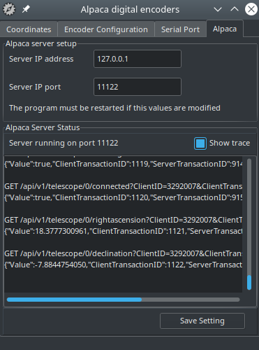

<body bgcolor="#202020" text="#E0E0E0" link="E0A0A0" vlink="E0A0A0" alink="F0B0B0">
<center>
<table BORDER=0 CELLSPACING=0 CELLPADDING=0 WIDTH="900" >
  <tr> 
    <td> 
<h1>Alpaca Encoder telescope driver</h1>

<p>This driver can be use with encoder controller using the Tangent protocol like the Ouranos , AAM or NGC-MAX box.<br/>
It use a floating two stars alignment method based on the article by <a href="http://www.takitoshimi.shop/">Toshimi Taki</a> in <a href="https://archive.org/details/Sky_and_Telescope_1989-02-pdf/page/n85">February 1989 S&amp;T</a>.</p>

<p>The <a href="https://ascom-standards.org/Developer/Alpaca.htm">Alpaca server</a> is embedded in this driver, allowing to connect any client application such planetarium using the ASCOM Remote Client on Windows, or by using the internal Alpaca client feature of the application like <a href="https://www.hnsky.org/software.htm">HNSKY</a> or <a href="https://www.ap-i.net/skychart/start">Cartes du Ciel</a> on Windows, Linux or macOS.<br/>
The Alpaca Encoder driver itself can run on Windows, Linux (intel or arm) and macOS.<br/> 
Because of the networking capability of the Alpaca protocol you can use different operating system for the driver and client. For example run the driver on Linux in a Raspberry Pi and connect from an application on Windows.</p>

<h2>Using the driver</h2>

<p>Please refer to the encoder controller manufacturer information to connect the encoder controller to the computer.<br/>
Then start the program alpaca_encoder. The following window is displayed :</p>

<p></p>

<p>The first time the program is started you need to provide some <a href="#config">configuration information</a>.</p>

<p>After the configuration is complete, click the "Connect button", the light must change to green and the encoder count are displayed at the top of the screen.</p>

<p>Perform the following alignment procedure :</p>

<ul>
<li>If you select 90 degree initialization :
<ul>
<li>point the telescope vertically for an altaz mount or parallel to the polar axis for an equatorial mount. It is important to understand that you must not point to the real zenith or pole but to the direction of your mount axis. Use of a fixed graduated circle or a stop piece can be of great help, see also the discussion about the <a href="#Z3">Z3</a> parameter below.</li>
<li>Click the "Init 90°" button.</li>
</ul></li>
<li>If you select 0 degree initialization :
<ul>
<li>point the telescope horizontally for an altaz mount or perpendicular to the polar axis for an equatorial mount. The above note also apply in this case.</li>
<li>Click the "Init 0°" button.</li>
</ul></li>
<li>Point the telescope to a star, use a reticle eyepiece and enough power to precisely center the star.</li>
<li>From the planetarium application, select this star and Sync to the telescope driver.</li>
<li>Repeat the procedure for a second star. Beware to choice a star with enough difference along the both axis from the first star.</li>
</ul>

<p>The position of the telescope is now displayed using equatorial and azimuthal coordinates. </p>

<p>After you move to another position in the sky you can refine the local precision by sending again a Sync for a new star. You are not limited with the number of initialization stars. The program always use the best pair to compute the telescope position.<br/>
The couple of star used for the part of the sky the telescope is actually pointed is marked by a '*'.</p>

<p>The Clear button delete all the stars in the initialization list and return the interface in uninitialized mode.<br/>
A mouse right click in the list allow to delete only one star from the list.</p>

<p>If you send a new Sync at the same encoder position, the new coordinates replace the previous point.</p>

<p>If your encoder controller return status information this can be indicated just below the coordinates.</p>

<h3>Main cause of error</h3>

<p>Sometime the position show on the chart is not the one you observe in the telescope, there is many cause of possible error here is a short list:</p>

<ul>
<li>Configuration error :
<ul>
<li>Encoder steps number is incorrectly set. You can get this error principally if you gear the encoder. To find the real value, use a full mount rotation with a fixed remote reference to count the exact number.</li>
<li>Mount fabrication error is large and not set.</li>
<li>Mismatch between azimuthal and equatorial mount.</li>
</ul></li>
<li>The precision for a two stars alignment is dependent of a precise first direction initialization (init at 0 or 90 degree). You can use the Z3 parameter to correct a systematic error. There is however no need for a precise polar alignment or mount leveling.</li>
<li>Unadapted reference stars, the first two alignment stars must have enough difference along the two axis and be far enough in the sky.</li>
<li>Also avoid to select an alignment star in the direction of the polar axis, Polaris is good for an azimuthal mount but not for an equatorial.</li>
<li>Missing encoder count by the controller box, this may occur if you move the mount too rapidly or if the battery is low.</li>
<li>Misidentification of a reference star.</li>
</ul>

<p><a name="config"/></p>

<h2>Interface configuration</h2>

<p></p>

<p>Select the encoder type you use, if your model is not listed consult your documentation to find a compatible model, if you find none select the generic Tangent model.</p>

<p>Set the encoder count for a full rotation for both axis.</p>

<p>The read interval is the amount of time that elapse between two position query to the interface box. Use a smaller value for a smoother cursor movement if your controller box accept higher traffic. Use a higher value to use less computer resource or if your interface box as a limited output rate.</p>

<p>Check the mount type (equatorial or Alt-Az) you use and if you prefer to do the first initialization vertically (90°) or horizontally (0°).</p>

<p><a name="Z3"></p>

<p>The mount fabrication error angle Z1, Z2, Z3 in degree are the one defined in Taki article :</p>

<ul>
<li>Z1 is the amount by which the elevation axis is offset from the perpendicular to the horizontal axis.</li>
<li>Z2 is the pointing error of the telescope optical axis in the same plane.</li>
<li>Z3 can be considered a correction to the zero setting of the elevation circle.</li>
</ul>

<p>Measuring Z1 and Z2 can be a difficult task, but Z3 is of great interest to help to initialize the mount.<br/>
As an example imagine your Dobson mount as a security stop 5 degrees above the horizon to avoid to flip the primary mirror. You can set Z3=5 and do the initialization at 0 degree. To initialize the mount simply put the telescope horizontally to the security stop and click the "Init 0°" button, that's all.<br/>
You can imagine the same if the stop is 15 degrees after the zenith but in this case use the "Init 90°" button.</p>

<p>You need to set the observatory coordinates. This can also be send by the planetarium using the Alpaca interface.</p>

<p>If the program is running unattended on another computer (a RPi without screen) it can be difficult to access the "Init" button to start the alignment.<br/> 
To help with this use you can check the option "Allow unattended initialization". In this case the 0 or 90 initialization is done when you connect from the remote client application. So be sure to place the telescope in the correct initialization position before to connect. When this option is checked it also make the interface to really disconnect from the hardware when you disconnect from the application. If you use the ASCOM Remote Client you must be sure the Connect/Disconnect option is set to Manage Remotely.</p>

<p>In the case of problem with the controller interface you can trace the protocol to a file by checking "Record protocol to a trace file".</p>

<h2>Communication port configuration</h2>

<p></p>

<p>Select the serial port (COM, tty, or other) where the encoder controller is connected.</p>

<p>Set the  other options (speed, data, parity and stop) according to the manufacturer instructions.</p>

<p>Change the timeout values only if you encounter communication problem and after identifying the problem with the trace file. Do not set the timeout to a value greater than the refresh rate in the preceding screen.</p>

<p>Click the Save Setting button to keep your configuration for the next run.</p>

<h3>Specific Intelliscope instruction</h3>

<p>Orion Intelliscope support was added by Gary Carpenter<br>
Intelliscope  procedure is :</p>

<ol>
<li>Set up Port Configuration
<ul>
<li>9600,8,N,1</li>
<li>Timeout 1000 mS</li>
<li>Interval Timeout 1000mS</li>
</ul></li>
<li>Set up encoder configuration
<ul>
<li>Type Intelliscope</li>
<li>Steps for Alpha : 9216</li>
<li>Steps for Delta : 9216</li>
<li>Read Interval : 1000 ( other values may work too )</li>
<li>Mount Type : Alt-Az</li>
<li>Encoder Init  Angle : 90 </li>
</ul></li>
<li>Turn on Intelliscope, and press enter at least once.
<ul>
<li>Note 1: You can go through the alignment procedure for the Intelliscope or not, the alignment of this driver is independent of the Intelliscope.</li>
<li>Note 2: You must press a key on the Intelliscope once in every 15 mins or it will go to sleep, and you will have to realign! </li>
</ul></li>
<li>Press connect and follow the normal vertical initialization and two star alignment.</li>
</ol>

<h2>Alpaca interface configuration</h2>

<p></p>

<p>This configure the internal Alpaca server that manage the communication with the client application.</p>

<p>Set the IP address and port the server will listen on. It is best to set the port higher than 10000 to prevent any system restriction on lower values.</p>

<p>You can use the IP of the network interface the client computer is connected on, or one of the following special IP address:</p>

<ul>
<li>0.0.0.0 : Make the server to listen on all the available network interface.</li>
<li>127.0.0.1 : Listen only on the internal loop-back interface, no other computer can connect to the server.</li>
</ul>

<p>You need to restart the program to apply the change because the server is only restarted with the program.</p>

<p>Below you see the server status, it show the port actually in use. Beware this can be different than the configured port if it cannot be used, in this case the reason is show in the log.</p>

<p>Error message are always logged. You can check "Show trace" to see the detail of the communication between the Alpaca client and server. </p>
   </td>
  </tr>
</table>
</center> 
</body>
